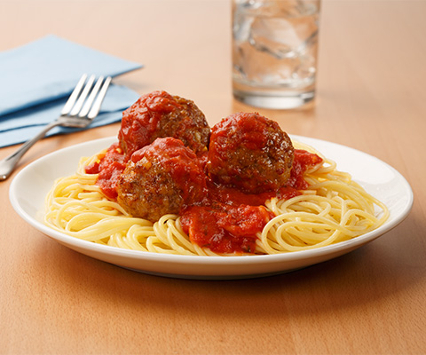

Spaghetti

Description
This is an italian dish that consists of spaghetti and red tomato sauce.
It is easy to cook a lot for many people to enjoy.
Ingredients:
- 1/2 box of noodles
- Water to boil
- Your favorite Red Sauce
- Garlic
Steps:
- Put noodles in a bowl with water and set to medium temperature.
-
Once noodles are soft to liking, drain water and seperate the noodles.
-
In a different saucepan, add the Red Sauce along with little garlic and
seasoning like salt and pepper.
-
Add the sauce to the noodles and stir. Sauce can also be served on the
side.
- Serve and enjoy!